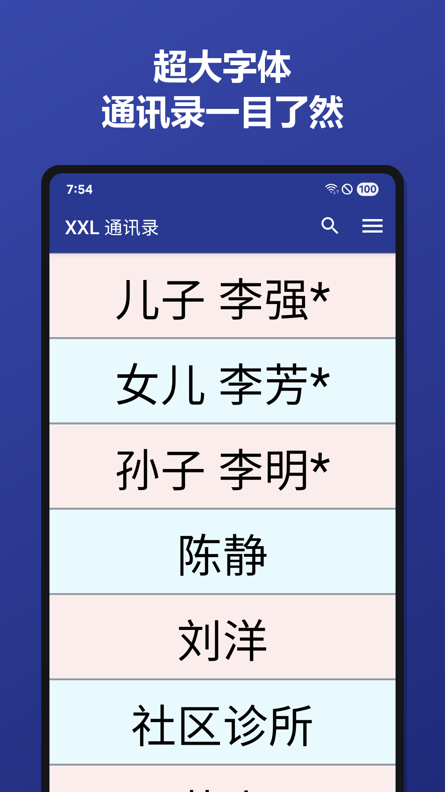
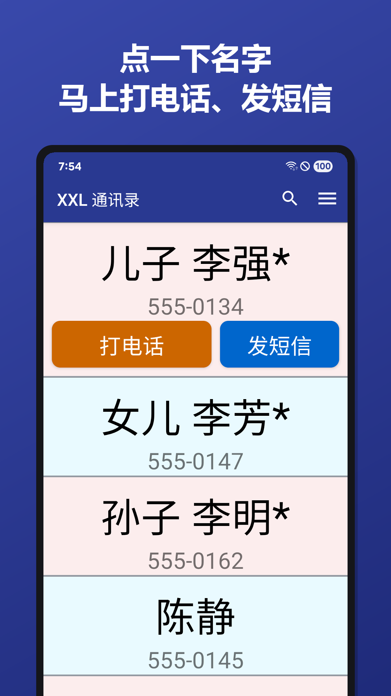
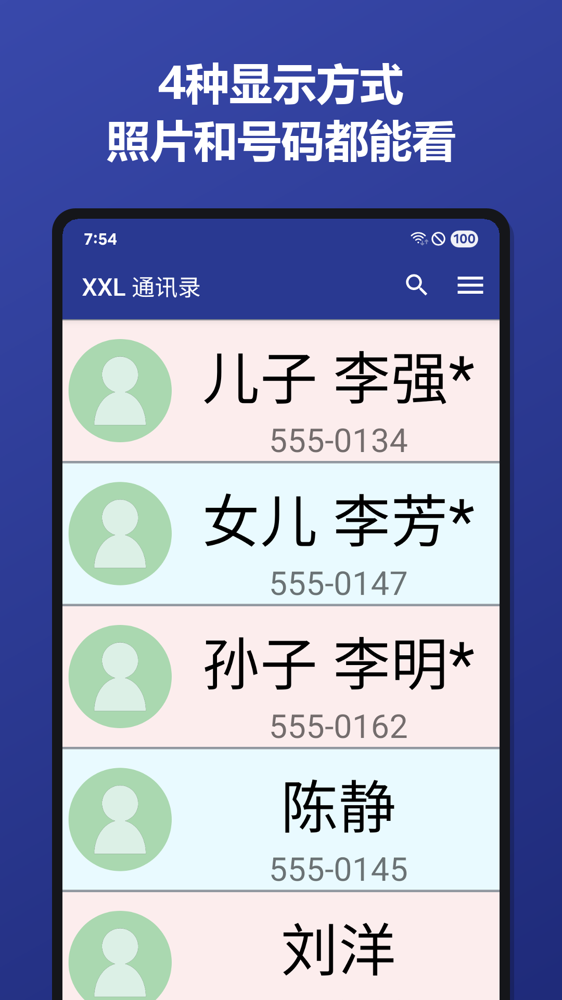
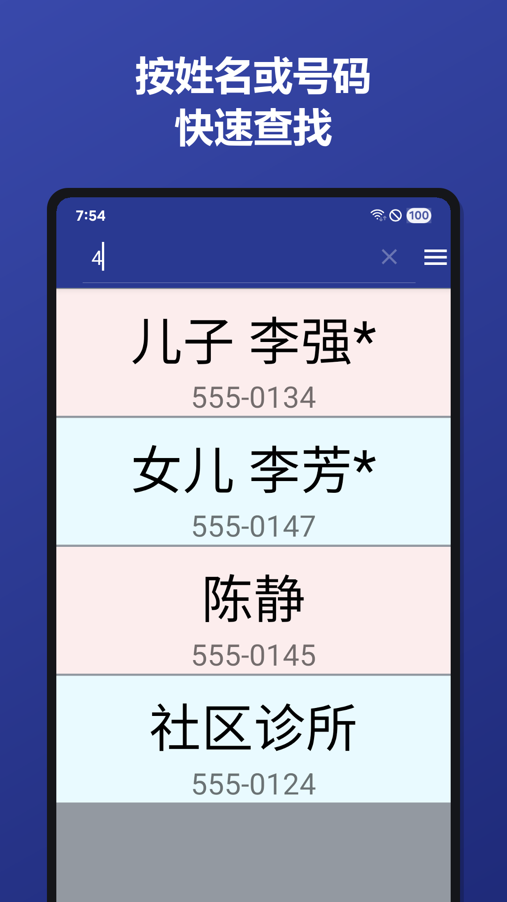
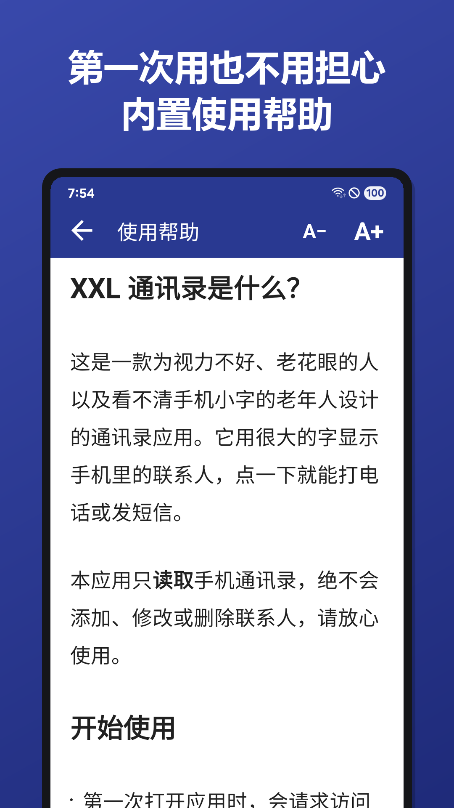

手机上的字太小，打电话很不方便？
XXL 通讯录是专为视力不好、老花眼的人和老年人设计的通讯录应用。它用超大字体显示手机里的联系人，点一下就能打电话或发短信。
超大字体
- 联系人名字用大字铺满屏幕，清楚好认。
- 字体大小共 8 级。在菜单 (☰) 中点“字体放大 / 字体缩小”，每次调整一级。
- 不受手机字体大小设置影响，按您在本应用中选的大小显示。
- 选好的字体大小和视图，下次打开应用时仍然保持。
一点就能打电话、发短信
- 点一下名字，就会出现大大的“打电话”和“发短信”按钮。
- 点“打电话”会打开已填好号码的拨号界面，需要再点一次拨号键才会拨出，不容易误拨。
4 种视图
- 只显示名字 / 名字 + 号码 / 照片 + 名字 / 照片 + 名字 + 号码
- 联系人照片以圆形显示。
轻松查找
- 加星标的家人、朋友排在最前面，其他人按名字排列。
- 点放大镜，输入名字或号码的一部分即可快速查找。
第一次用也很简单
- 第一次打开时允许访问通讯录，就会马上导入联系人。
- 菜单中的“使用帮助”用大字详细说明用法，帮助文字还可以用 A− / A+ 调大。
10 种语言
- 支持简体中文、英语、韩语、日语、西班牙语、德语、法语、俄语、印地语和阿拉伯语。
- 默认跟随手机语言，也可以在菜单的“语言 (Language)”中只为本应用换成其他语言。
放心使用
- 只读取手机通讯录，绝不添加、修改或删除。
- 没有联网权限，不会把联系人发送到任何地方。
- 没有广告。
- 只需要“通讯录”这一项权限。
请注意
- 在手机通讯录里保存或修改号码后，请点菜单中的“导入手机通讯录”。
装在父母的手机上，他们就能用大字轻松给家人打电话。
在 Google Play 下载（免费）